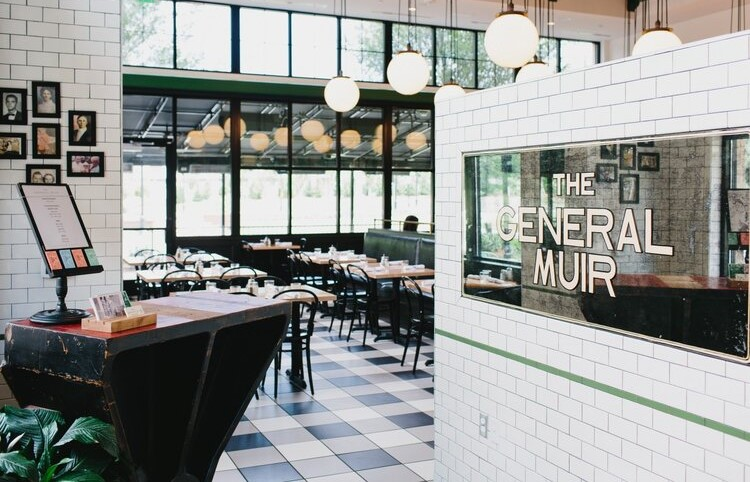
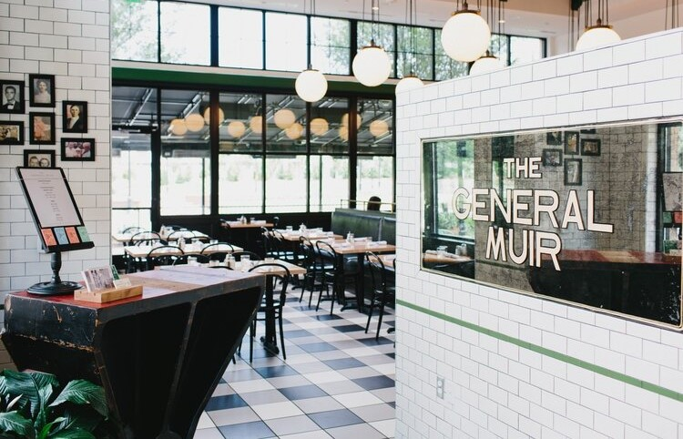

1540 AVENUE PLACE
SUITE B-230
ATLANTA, GA 30329
TEL: 678 927 9131
6405 BLUE STONE ROAD
SUITE 240
SANDY SPRINGS, GA 303228
TEL: 404 255 3000

1540 AVENUE PLACE
SUITE B-210
ATLANTA, GA 30329
TEL: 404 941 9751
“Eat Something!”

Our Story
The General Muir, established in January 2013 at Emory Point, is a modern American restaurant inspired by classic New York Jewish Deli, returning it to its hand-crafted roots. Traditional favorites are honored — pastrami is cured and smoked in house, bagels are hand rolled and kettle boiled — and joined by dishes going beyond tradition, focusing on fresh ingredients and simple preparations. A second location in Sandy Springs opened in 2021.
The restaurant is named for the refugee transport ship that brought co-owner Jennifer Johnson's mother and grandparents, Holocaust survivors, to New York in 1949. Read more about the origin of our name and see the video by Atlanta Magazine below.
The General Muir serves breakfast, lunch, and weekend brunch at both locations, plus dinner at the Emory location, and offers an espresso bar serving locally-roasted Dancing Goats coffee as well as a full bar of wine, beer, spirits, and cocktails. Next door to the original Emory location, you’ll find TGM Bread and TGM Soup Co. pairing fresh baked breads and soups for a quick lunch, as well as loaves to take home. TGM Bread bakes all of the bread daily for both locations, the rest of the Rye Restaurants family, and many other restaurants around town.
The Partners
The General Muir is owned by Jennifer and Ben Johnson, Shelley Sweet, and Chef Todd Ginsberg, who also partner on Fred's Meat & Bread and Yalla in Krog Street Market and Wood's Chapel BBQ in the historic Summerhill neighborhood of Atlanta — the Rye Restaurants family of restaurants.
The Johnsons, husband and wife, opened West Egg on Atlanta’s Westside in 2004. Both Jennifer (our "office girl") and Ben (fondly referred to as "errand boy," although Renaissance man is more like it!) are former attorneys who practiced law in Atlanta for nearly 7 and 11 years, respectively, before embarking on a second career in hospitality. West Egg proudly celebrates its 20th anniversary in 2024.
Shelley Sweet found her passion for the restaurant industry after graduating college and working in graphic design, beginning her restaurant career at West Egg when it opened in 2004. She joined the Concentrics Restaurant Group in 2006, serving as a manager at Two Urban Licks, Assistant General Manager at Murphy’s, and ultimately as General Manager of TAP from 2008 to 2010. She was the opening General Manager at Hugh Acheson’s Empire State South. Coming full circle, Shelley rejoined West Egg in 2011 as General Manager, becoming a partner in 2014. Shelley, Jennifer, and Ben continue to partner on West Egg, with Chef Andrew Smith. Shelley is a member of Les Dames d’Escoffier International, Atlanta Chapter, and recently served on the Georgia Restaurant Association Board of Directors.
Todd Ginsberg is a 2014 and 2015 James Beard Foundation Semifinalist for Best Chef, Southeast and a graduate of the Culinary Institute of America at Hyde Park, New York. He started his career at The Dining Room at The Ritz-Carlton in Atlanta under Joel Antunes and Bruno Menard, led the kitchens at Asher in Roswell, Georgia, and Madison's in Highlands, North Carolina, and spent time at Lucas Carton in Paris and at Alain Ducasse in New York. Upon his return to Atlanta, he worked for the Concentrics Restaurants group, serving as chef at both TAP and Trois. Todd was the chef at Bocado from its opening in 2009 until partnering with Shelley, Jennifer, and Ben to open The General Muir.
In 2014 the Georgia Restaurant Association honored Jennifer, Ben, Shelley and Todd as Restaurateurs of the Year and, in 2018, StarChefs recognized them as Rising Star Restaurateurs.
Press for The General Muir
MICHELIN RECOMMENDED 2023
2015 AND 2014 JAMES BEARD FOUNDATION SEMIFINALIST,
BEST CHEF: SOUTHEAST, TODD GINSBERG
BON APPETIT 50 BEST NEW RESTAURANTS 2013
GQ 25 BEST NEW RESTAURANTS IN AMERICA 2014
ATLANTA MAGAZINE RESTAURANT OF THE YEAR 2013
ATLANTA MAGAZINE BEST BURGER 2018
ATLANTA MAGAZINE 50 BEST RESTAURANTS IN ATLANTA
EATER ATLANTA RESTAURANT OF THE YEAR 2013
CREATIVE LOAFING BEST NEW RESTAURANT 2013
CREATIVE LOAFING BEST OVERALL RESTAURANT 2014
CREATIVE LOAFING TROPHY CASE 2016
GEORGIA RESTAURANT ASSOCIATION, RESTAURATEURS OF THE YEAR 2014
STARCHEFS 2018 ATLANTA RISING STAR RESTAURATEURS
...
The Story of The General Muir, by Atlanta Magazine
The below images, taken from the deck of the Gen. Muir, were provided by Robert Boehm, whose father, Henry Boehm (Henryk Bohm) (center of photo on left) arrived in this country aboard the Gen. Muir in March 1949, on the same voyage as Jennifer’s mother. We made this incredible connection after the restaurant opened. Mr. Boehm, a Holocaust survivor, was a dentist, athlete, and Conservatory-trained operatic singer from Lwow, Poland (now L’viv, Ukraine), just 40 miles from where Jennifer’s grandparents lived before the war. We appreciate the Boehm family sharing these images; you can see them in person at our Sandy Springs location.